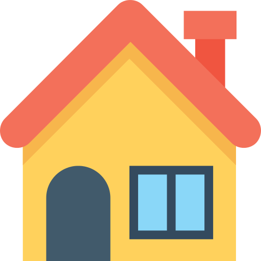

<body style="background-color: turquoise">
<ion-header>
  <ion-toolbar>
    <ion-title [style.color]="color">

        <ion-icon name="home" style="width:3%;"(click)="GoBackHome()"></ion-icon>
                
        

       
        <!--  -->
      </ion-title>
    <ion-icon [style.color]="color1" name="arrow-back" style="margin-right: 100%" (click)="GoBackPage()" ></ion-icon>       
       <!-- <ion-icon name="home" (click)="GoBackHome()" style="margin-left: 95%"></ion-icon> -->
  </ion-toolbar>
</ion-header>
<ion-content class="general">


<div id="bla" class="general" style="background-size: cover;">
  <ion-slides  class="general" (ionSlideDidChange)="slideHappened($event)"  id="slides"   style="position: relative" ##sliderRef>   
      <ion-slide  class="general" *ngFor="let item of images; let i=index"  >
        <div  id="imagenumber" class="fontborder" [style.color]="color" style="margin-top:-15%;margin-left: -25%;font-size: xx-large;position: absolute;" ></div>
        
  
        
      
        <!-- <div (swipe)="($event.offsetDirection  == 4) ? goback():goforward()" *ngIf="img" id="image" (click)="findclickcoordinants($event)" [ngStyle]="{'background-image':'url('+ item.image.URL +')'}" style="margin-left:20%;height: 100%;padding-top: 1%;width: 60%;align-self: center;-webkit-background-size:cover"> -->
        <!-- <p id="ooo" > {{NameObject}}</p>  -->
      
 <!-- </div>  -->
      
   </ion-slide>
  </ion-slides>
  <div *ngIf="listObj" >
    <div  *ngFor="let obj of listObj;let i=index" (click)="makeTransparency($event,obj)" id="{{'div'+i}}">

    </div>
  </div>
  
 <br>
 <br>
 <br>
 <br> <br>
 <br>
 <br>
 <br>
 <br> <br> <br> <br>
 <br>
 <br> <br> <br> <br>
</div>
</ion-content>
</body>